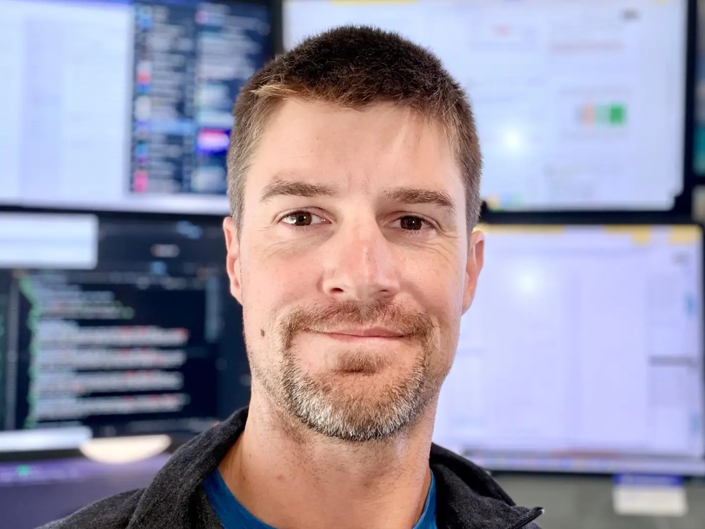

About
Curious, logic-driven, and still hands on the tools.
Twenty years across design and engineering. Eleven of them leading product design; ten-plus of them writing production code.
I’ve been the first UX hire (at Webjet.com.au) and grown that function to six people across three countries. I’ve leveraged AI to plan, prototype, and build an extensive industry reviews platform. I’ve mentored designers, developers, and founders. My north star is validating that we’re creating valuable, frictionless products.

What you’re getting
Four things I’d want to know if I were hiring me.
I lead with research and data
Capturing and analysing user feedback and behavioural data is critical for product decision making. I've implemented user action eventing & session replay capture, worked with internal analytics teams, and established a remote usability research practice spanning 1,000+ participants a year against major initiatives.
I engage with engineers as a peer
Ten-plus years shipping production code means I know what's feasible and what's a stretch. I know firsthand what AI agents can accelerate. I’ve architected & launched a full-stack B2B reviews platform, founded a UI pattern library, argued a specialist dev team into existence, and resolved high-friction designer–developer handover processes.
I'm commercially focused
I've managed the UX budget within an ASX200 listed company and ran financial operations for three startups. I ensure resourcing & tool spend delivers measurable value to the business.
I have a structured approach
Double Diamond (British Design Council) method for scoping and delivering de-risked projects; divergent thinking is protected from convergent critique. Stefan Klocek’s Hierarchy of Effort to sequence change in organisations that aren’t ready for full-send UX practice yet. Sachin Rekhi's Product-Market Fit Hypothesis and various other product management frameworks from Reforge Academy.
Career highlights
Where I’ve worked and what changed.
Outcomes shared where commercially permitted.
-
Apr 2025 – presentRemote, AU
Solo founder, designer & engineer
Web3Connect.com · B2B reviews & recommendations marketplace
Designed and built a four-app platform solo — public marketplace, review submission flow, adaptive user dashboard, admin moderation queue and a lifecycle email design system. A deliberate, time-boxed bet on AI-orchestrated product delivery; up-front PRD, schema, taxonomy and design-system work made an eight-week build and launch possible.
- Design system in code before any UI mockups — one shared component package consumed by all four apps, readable by the AI engineer as it built
- Dashboard adapts to user archetype and tier (seeker / reviewer / partner, free vs paid); behavioural tagging shifts downstream messaging and the next-best action
- Shipped LLM-readable routes —
/llms.txtindex, markdown over HTML, token-budget headers — treating information density for agents the way visual hierarchy works for humans - PostHog session replay and custom events used to find confusion points; fixed them into more completed flows and less downstream admin
- Read the macro against further investment and redirected effort rather than sunk-cost it
-
Jan 2015 – Apr 20216 yrs 4 mos
User Experience Manager
Webjet · ASX:WEB · market cap $200M → $2B during tenure
First UX hire. Grew the function to six designers across Dubai, Auckland and Australia while continuing to design the highest-impact interfaces myself.
- Designed every pre- and post-purchase interface across flights, hotels, packages and car hire — responsive web plus native iOS and Android
- Led the legacy flight purchase-path retrofit end to end: research, design, prototyping, testing, rollout. ≈ +$500k AUD per month in sales volume
- Championed and designed the flight price heatmap, including the four-colour cheap/expensive algorithm — heavily prototyped and tested before build
- Founded the organisation’s first UI Pattern Library across web and native; integrated adoption into approved in-flight work with Product Owners and squad BAs
- Established organisation-wide Design Principles drawn from user research, used as the criteria for product trade-off decisions
- Built the remote usability research practice: 400–1,000 participants a year; negotiated the annual contract, saving $100–200k+ against default renewal pricing
- Partnered with Analytics to instrument event tracking; step drop-off became a primary input to prioritisation. BigQuery + Tableau for behaviour at scale
- Hired and mentored four designers, including Rob Nastos, who now leads UX at Webjet
- Turned the team into an innovation unit — a standing ‘shopping list’ of enhancements that stakeholders pulled into production
-
May 2023 – Apr 20252 yrs
Co-founder & COO (acting CTO)
Eclipse Fi · DeFi launchpad infrastructure · $3M USD raise
Fully remote across Singapore, Ukraine, Indonesia, Hong Kong, the Philippines and Australia. Design judgement carried alongside financial control and, later, acting-CTO responsibility for five engineers.
- Guided the contract UX designer through the early product surface; ran design reviews twice weekly
- Resolved a live conflict between engineering and design: introduced a signed-off / in-progress workflow with per-product Figma indexes, plus twice-weekly UX–front-end stand-ups so developer input shaped work before it was built. Rebuilds dropped; morale recovered
- Designed a live token public-sale fundraising dashboard pulling directly from on-chain RPCs, and customer-retention Sankey flows tracking repeat participation across raises
-
Nov 2020 – Jun 20221 yr 8 mos
Portfolio Manager / COO
LVT Capital · crypto-focused VC & proprietary trading fund
- Designed and built the market-data aggregation and visualisation system the principal used to surface investment opportunities
- Portfolio constitution and vesting-horizon dashboards — the right tool at family-office scale
-
Nov 2004 – May 20149 yrs 7 mos
First web developer, later UX-led full-stack
Enigma Communications / XO Digital · agency
First developer hired. Shipped 200+ websites over ten years for clients including McDonald Jones Homes, Landcom (NSW Government), Hunter TAFE, Newcastle Building Society and Pacific Dunes.
- Design degree plus coding fluency made me the bridge between a print-trained studio and the client: scoping, sitemaps, content plans, requirements workshops, technical quoting
- Migrated the agency off my own proprietary CMS onto mature open-source platforms; wrote provisioning and deployment automation
- Mentored the studio on web constraints, mentored the developers, trained account managers — grew the in-house team to five
-
Feb 2003 – Nov 20041 yr 10 mos
Lecturer
University of Newcastle · graphic design & interactive media
Lectured and tutored final-year and honours students. Bachelor of Design (Visual Communication), University of Newcastle, 2002.
Skills & tooling
The stack a best-in-class product org actually runs on.
Grouped by where it sits in the loop. Bold means I’ve used it on shipped work; the rest I’m fluent in and can pick up on day one.
Discover & research
- UserTesting.com — unmoderated remote studies at volume
- Task & scenario design, moderated interviews
- PostHog session replay + custom events
- Maze, Sprig, Hotjar, Lookback
- Dovetail — tagging & atomic research
- Support & CS ticket mining, Chatwoot / Intercom / Zendesk
- Competitor & heuristic audits, UI inventories
Define & align
- Double Diamond as team methodology
- Research-derived design principles as trade-off criteria
- Journey maps, service blueprints, JTBD
- Markdown PRDs, polymorphic schema & taxonomy design
- Notion, Confluence, Miro, FigJam
- Stakeholder workshops & buy-in strategy
Design & systems
- Figma — variables, auto-layout, component APIs, dev mode
- Design tokens & multi-brand theming
- shadcn/ui + Tailwind v4, Radix primitives
- Storybook, component documentation
- Design system governance — ownership, contribution, adoption
- Accessibility — WCAG AA, contrast, touch targets, keyboard order
- Sketch + Sketch Measure (historic), Hologram, LESS
Prototype & generate
- Figma prototyping — flow-complete, testable
- Polymet.ai — AI-assisted UI generation
- Claude Code — AI-orchestrated implementation under design rails
- v0, Framer; InVision (historic)
- Coded prototypes when feasibility is the question
Build & ship
- Next.js, React, TypeScript
- HTML / CSS to production standard
- PostgreSQL, Prisma, ORPC, better-auth, Stripe, Algolia
- Git, GitHub Actions, Cloudflare, Railway
- Linear, Jira, Azure DevOps
- Dev-ready handoff & sign-off workflows
- AI instruction systems — design conventions, a11y rules and review standards as enforceable rails
Measure & iterate
- Event instrumentation designed with the interface
- PostHog, GA4, Amplitude, Mixpanel
- BigQuery + Tableau for behaviour at scale
- Funnel & step drop-off analysis feeding prioritisation
- A/B and multivariate testing
- Customer.io lifecycle messaging & behavioural variants
- Conversion attribution to design change
Currently researching
- The agent as a user. When an LLM is the visitor, information density and structure are the new visual hierarchy. Markdown routes, token budgeting, machine-readable indexes.
- AI-orchestrated delivery with the design bar intact. How far modular instruction systems can encode conventions and accessibility rules as rails an agent can’t drift out of.
- Design systems that are the source of truth in code, not a Figma library that drifts from it.
- Qualitative signal from replay at scale — finding confusion without waiting for a scheduled study.
Where my thinking comes from
- Nielsen Norman’s usability heuristics — consistency and standards especially, the ones organisations break first
- Steve Krug, Don’t Make Me Think — “people don’t read, they scan”. Testing has proved this to me more times than I’d like
- Stefan Klocek’s Hierarchy of Effort — how to mature an organisation that isn’t ready for user-centred design yet
- British Design Council’s Double Diamond — because separating divergent from convergent thinking is what stops good ideas being killed young
Outside work
Four things I’d probably bore you about.
Trails & e-rides
Remote has more of them than I have weekends. Best thinking I do all week happens somewhere without phone reception.
Early lifting
A 6am AEST start suits me because I’m already up. It also happens to line up neatly with a San Francisco afternoon.
Emerging-tech rabbit holes
Blockchain since well before it was fashionable, and AI agents since it became obvious they were going to change how products get built. I follow these things far enough to have opinions.
Teaching
I lectured design before I practised it professionally, and mentoring is still the part of leading a team I’d least want to give up.
In other people’s words
The mentoring part, mostly.
More on the homepage, including from Webjet’s COO and both CTOs.
Get in touch
Looking for a full-time, in-house product team that wants to co-build with its customers.
Senior IC or player-coach. Happy to walk through any project in detail, including what didn’t work. References available.